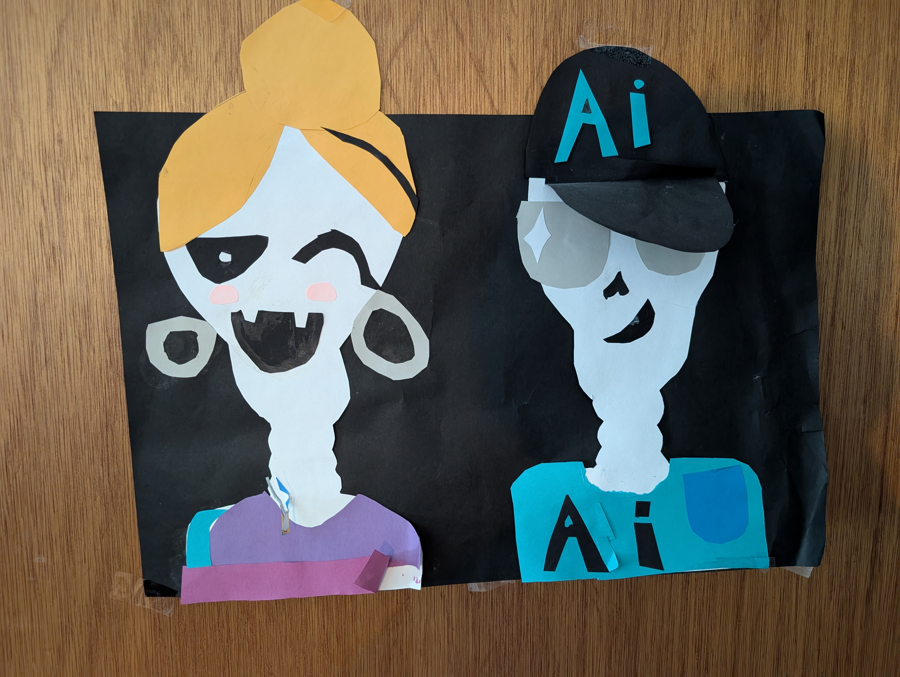

I'm a father of two (that's me with the hat, according to my daughter when she was 9). My kids are growing up with tools that didn't exist a few years ago, and they'll enter a workforce that looks quite different from today's. I also work with adults whose livelihoods depend on adapting to these changes in real time.
I'm building resources for people trying to understand AI without the jargon or the sales pitch. I'm also sharing what I'm learning. For example, I experienced the downside of cognitive offloading (letting a tool do the thinking, like relying on GPS until you can't drive without it) before it was a trending topic. I used AI to research human-computer interaction (HCI), knew the risk of letting it do too much of the thinking, planned around it, and still came out the other side remembering almost none of it. I missed most of what I set out to learn about HCI, but I learned what cognitive offloading feels like (I can't talk about it because it's not in my brain).
I've had this runningstart.ai site for a few years, but the internet is flooded with free AI resources and I didn't want to add to the noise. Then why add to it now? Because the flood causes paralysis.
So I'm keeping this simple. A few resources per topic, and what I'm learning along the way.
~Conzolo Migliozzi